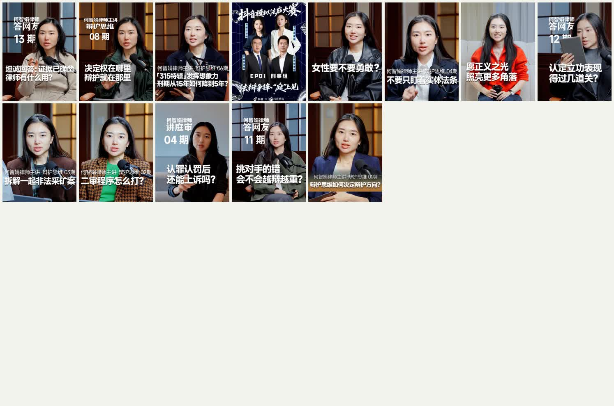

保险个人IP视觉研究每日监测归档 · 持续更新
DAILY VISUAL MONITOR
每日高审美个人IP画面监测
每天按同一套门槛寻找、复查和动态验收候选画面。报告允许零新增：没有达到85分，就不把普通画面包装成标杆。
2累计监测天数
135累计搜索结果
13主页／系列复查
0正式新增母版
按日期查看
DAY 02 · 2026-07-27
封面竖屏，不代表视频适合竖屏
82条结果、65位创作者、11个量级核验、6个主页／系列复查。杨一面对面动态终评83分。
打开今日报告 →
DAY 01 · 2026-07-26
85分准入线首次试跑
53条样本、7个主页复查、216张封面。何智娟律师动态终评83分，首日0新增。
打开首日报告 →固定规则：保险个人IP粉丝≥30万，跨行业个人IP粉丝≥50万；同一母版主页至少复现3次；通过动态核验且总分≥85才进入正式标杆库。